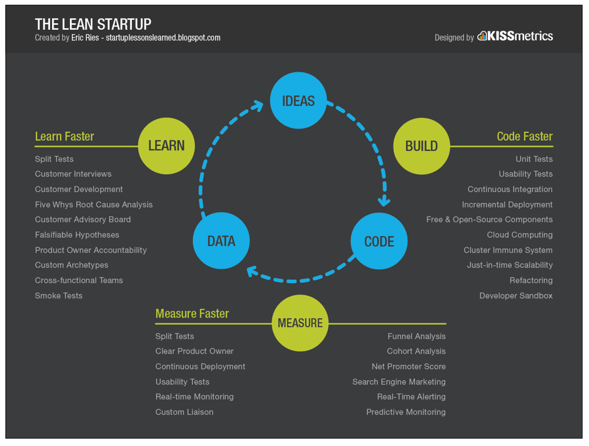
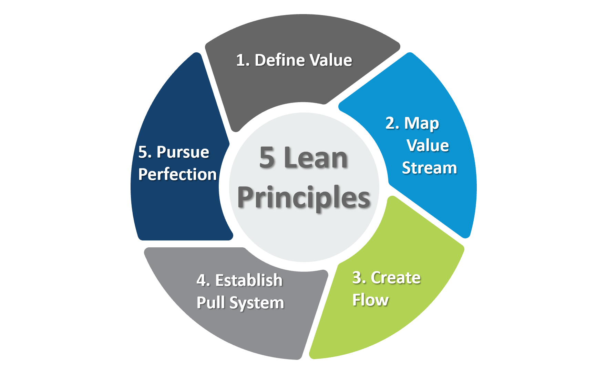

Committed to Delivering Excellence
USL is a proud veteran-owned small business dedicated to delivering critical services and solutions to our customers. Our leadership style brings a unique understanding of the challenges and demands of our clients and our commitment to speed, quality, and compliance makes us a preferred choice for our customers. With several years of military experience and a focus on mission-driven results, we work closely with our clients to develop on demand solutions.
Digital Engineering and Manufacturing Solutions
USL provides digital engineering services for aerospace, defense, and maritime industries. We specialize in converting physical hardware—particularly legacy, obsolete, or mission-critical components—into precise, digital assets. This process enables secure, domestic sustainment, rapid prototyping, and long-term supply chain resilience without reliance on original drawings or OEM sources.
Our core business is providing advanced digital scanning services, performed on-site or in controlled environments, to maintain chain-of-custody and compliance standards (including CMMC and JCP requirements). We use scanning to capture precise digital copies to generate CAD models, technical data packages (TDPs), and digital twins in formats such as STEP, IGES, or native files compatible with common engineering software.
This digital foundation supports:
- Reverse engineering for obsolescence mitigation
- Spare parts, MRO sustainment, and maintenance support
- Qualification of replacement parts for military, commercial, and space applications
- Integration with our domestic manufacturing partners for production
By leading with digital engineering, we deliver measurable value: reduced non-recurring engineering costs, shortened lead times, minimized downtime, and enhanced control over critical assets. All work is performed domestically by our team.
Whether addressing a single legacy part or supporting broader parts sustainment, USL transforms physical hardware into digital assets by developing new digital identities—ensuring continuity, compliance, and mission readiness.
Why Choose Us?
- Service Disabled Veteran-Owned Small Business: As a veteran-owned company, we bring a strong sense of duty, discipline, and problem-solving to every project.
- CMMC and JCP Certified: We require business partnerships and suppliers to hold proper certifications
- Proven Expertise: We handle complex commercial and government projects across commercial, aerospace and defense companies, and for the Department of Defense.
- Commitment to Innovation: We focus on providing state-of-the-art, sustainable, and cost-effective solutions that support the long-term success of government initiatives.
- Compliance & Safety: We prioritize compliance with all industry regulations and safety standards, including JCP, ISO, AS9100, CMMC.
- Mission-Driven: Our leadership ethos ensures we always approach every project with a focus on delivering clarity and results to improve our clients business.
Lean Framework and Principles
USL's framework for success focuses on utilizing Lean Startup, Management, and Manufacturing principles
Our framework aligns with:
- Next Gen Manufacturing 2.0
- Products “Made in America”
- Quality products and Quality control
- Business sustainability and scalability
- Eliminating waste
- Consistent process improvements
- Consistent innovation

